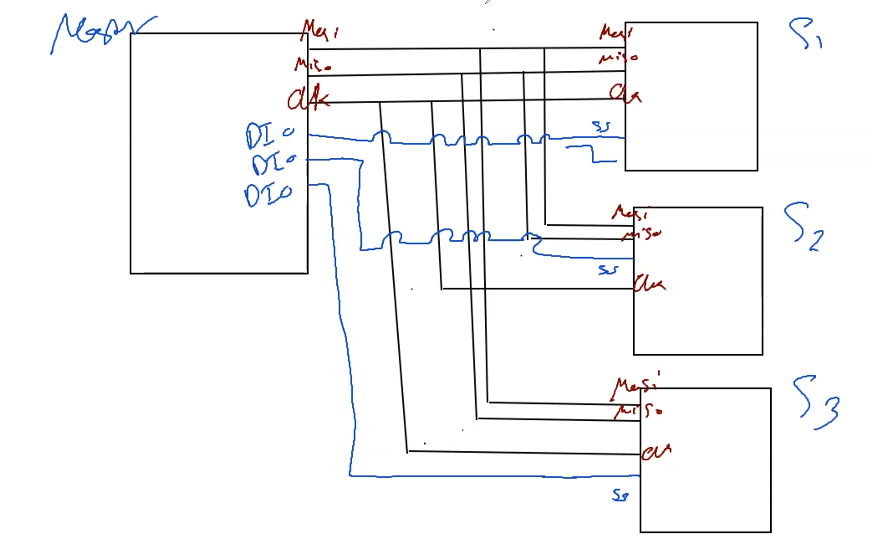
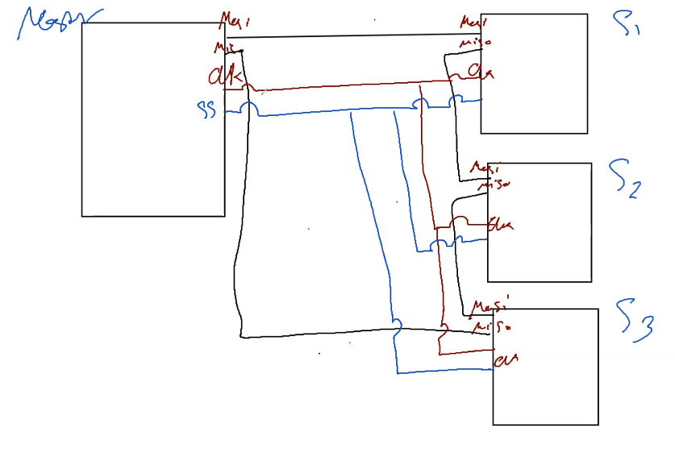

First thing is the selection where the master chooses the Slave its
gonna communicate with, through the SS-pin and this happens
through sending a 0 pulse to the slave which is translated by the
Slave hardware that its currently selected as a readiness sign.
Second step is sending the CLK from the Master to the slave such that
the slave would understand the speed of communication its gonna send
and recieve with.(Synchronous)
Now lets discuss the MISO/MOSO Process, We will begin our capture
where the Master got a stored value and the slave got a value
The Master send 1-bit and instaneously the slave sends 1-bit and
thats why its called Exchange-Process, where both happens at
the same time.
At the same insident the Master and slave shifts Right by one bit,
and that is why those two registers are called Shift REGs
All that happens dueto one Pulse from the CLK, and therfore we can
conclude that the Full registers will exchange their values in
8-CLK-Pulses.
SS/CS Connection Types
Normal Connection
Daisy Chain
Normal Connection

So as we said previously that the SS Pin needs to signify a zero bit to
the Selected Slave so can't we replace that 0 bit with any DIO-Pin to
send the zero to Multiple slaves!! and thats the fastest connection as
we discussed where all is needed one 8 pulses to transfere the data.
Daisy Chain

However What about if we have 10/20/30 slaves The master wanna
communicate with!!
So its decided to make another type of connection called daisy chain
where the master communicates with first slave and each slave
communicates with other slaves and therfore if the we need S1-Data it
will need to pass through S2 the S3 and finally till it reaches the
Master.
Advantage Daisy-Chain
Cures the limitation of DIO-Pins
Disadvantage Daisy-Chain
Way Slower Than the Direct/Normal Connection
Clock Cycle Dive Deeper
There are two main factors in the CLK Clock Polarity and
Clock Phase.
CLK Polarity: This indicates the intial logic either a zero or
a one.
CLK Phase: This indicates the reading and writing on one pulse,
If CLK_PH = 0 this means that the sample Reading is in
Leading Edge while the Sample Writing is in
Falling Edge and Vice Versa if CLK_PH=1.